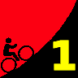
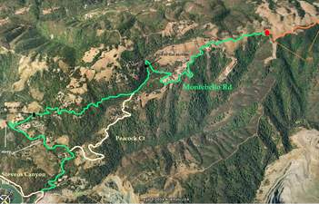

|  |
2009 Low-Key Hillclimbs Week 1: Montebello 03 Oct 2009 |
|  |
| Aerial photo of Montebello, courtesy of Stanford Cycling |
October... a chill creeps into that morning ride. Leg warmers misplaced, and found again. The after-work ride is getting squeezed out by the early-setting sun. The prospect of the long, dark winter looms. But it's not time for the rain.... not quite yet.
It's time for Montebello. It's time for Low-Key.
Our insurance demands it: helmets are required. Sorry kids, no exceptions!
USA Cycling rules do not allow ear plugs. We don't think it's a good idea either. So for safety sake, please leave both ears open during all Low-Key events!
Trailers pulling boom boxes are fine, however.
Go to the parking lot on Steven's Canyon Road, at the reservoir, just north of Montebello road. Parking is available there. We will stage there at 10:10am for a rolling start to the base of the climb, when the fun begins! Registration opens at 9:15am, closing at 10am.
Caltrain: IF the 15 minute delay is removed from southbound weekenders, then take the train leaving San Francisco at 8am to Mountain View, then ride 7.9 miles to the start. You should just make it in time for the end of registration. Otherwise, there's always an early SamTrans KX bus into Palo Alto. Space for 2 bikes. Maybe you'll get lucky. Bring reading material, things get really slow once it hits El Camino in San Bruno.
From northbound Caltrain, Sunnyvale staion will be quicker. The 8am train from San Jose is fine (there's also a 7am). For BART, it's probably easiest to connect in San Francisco (Embarcadero station, ride to 4th and King) rather than Millbrae.
| stats | 5.3 miles, 1940 feet, 6.9% |
| format | mass start |
| time | reg 9:15 - 10:00 start 10:10am |
| coordinator | |
| aerial view | Stanford Cycling |
| route profile | plot of Lucas Pereira's data Lucas Pereira's profile |
| weather | Weather Underground Weather Bonk |
| registration form |
PDF release form |
| entry fee | $10 voluntary donation free for juniors 2 free for volunteers free for coordinators |

{kind=link}
{kind=link}